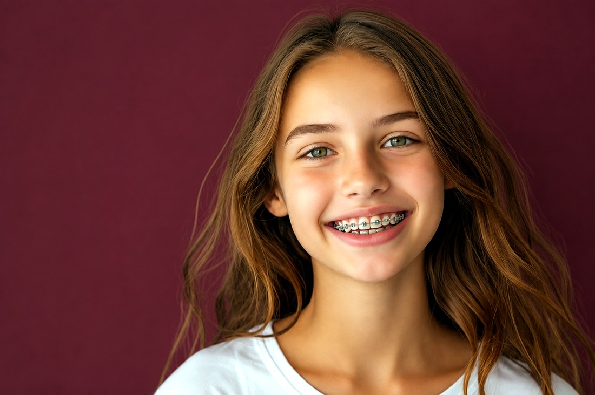
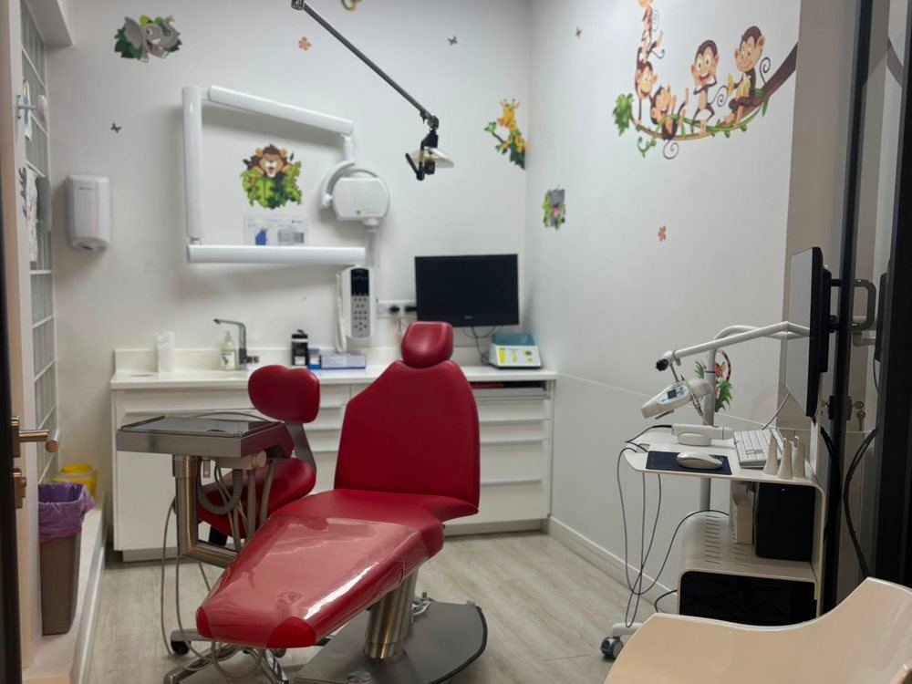

Orthodontie enfants & adolescents
Orthodontie des enfants et des adolescents au Centre d'Orthodontie Gravelle, centre de santé dentaire à Charenton-le-Pont.
Première consultation
Une première consultation est conseillée dès 4 ans, pour examiner la croissance des mâchoires et les dents de lait. Un appareil n'est pas toujours commencé à cet âge.
Le Dr Jessica Marciano, chirurgien-dentiste (activité orientée orthodontie), indique si un traitement est utile et à quel moment le commencer.
- Correction des décalages de mâchoires
- Gestion du manque de place et des dents mal positionnées
- Prise en charge des habitudes (succion du pouce, respiration buccale)

Appareils chez l'enfant et l'adolescent

Appareils fixes (bagues)
Bagues métalliques ou en céramique, utilisées pendant la croissance lorsque l'indication est retenue.

Appareils amovibles
Des dispositifs à porter à la maison pour guider la croissance des mâchoires des plus jeunes.
Les systèmes multi-attaches
L'appareil multi-attaches (les « bagues ») est un traitement d'orthodontie fixe. Plusieurs types d'attaches existent.
Le système classique
Le dispositif associe des attaches (ou « brackets ») collées sur la face visible des dents, parfois des bagues sur les dents du fond, et un arc orthodontique. Le praticien ajuste cet arc au fil des séances.
Les nouveaux systèmes
Deux variantes utilisées au centre, selon le cas.
Brackets céramique
Attaches en céramique, de teinte proche de la dent. Elles peuvent être proposées aux enfants, aux adolescents et aux adultes.
Appareils auto-ligaturants
Un clip maintient l'arc sur l'attache, sans élastique de ligature. Le choix entre ce système et un appareil classique se fait après le bilan. La durée du traitement n'est pas la même pour tous les patients.
Le Dr Marciano indique, après examen, l'appareil envisageable. Aucune durée identique n'est annoncée pour tous les patients.
Questions fréquentes des parents
À quel âge emmener mon enfant en consultation ?
Un premier bilan est conseillé dès 4 ans, même sans problème apparent, afin d'examiner la croissance. Un traitement n'est pas toujours commencé à cet âge.
Le traitement est-il remboursé ?
Oui. L'orthodontie est prise en charge par la Sécurité sociale pour les enfants de moins de 16 ans, sous réserve d'une demande d'entente préalable. Le cabinet pratique le tiers payant et la CMU.
Les bagues font-elles mal ?
La pose est indolore. Une gêne légère peut apparaître les premiers jours, puis disparaît rapidement. Nous vous accompagnons à chaque étape : voir nos conseils pour vivre avec un appareil (brossage, aliments à éviter, gérer la gêne).
Prendre rendez‑vous pour un bilan
Doctolib ou 01 43 96 26 00. Premier bilan dès 4 ans, sur rendez‑vous.
Prendre rendez‑vous 01 43 96 26 00